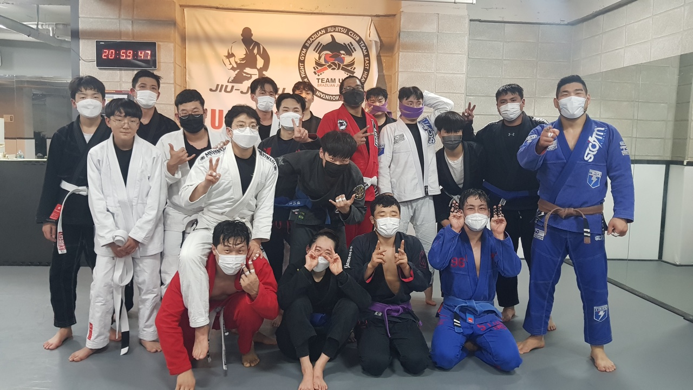

1st Sports
주짓수

주짓수 요약
유럽에서 성행하여 2018 자카르타 아시안 게임에 정식 종목으로 채택.
자신보다 큰 상대를 제압하는 무술
룰이 상당히 복잡하고 만여가지보다 더 많은 기술이 존재
각 포지션별 점수가 다르고 크게 가드패스와 스윕 서브미션으로 나뉨.
사이드 포지션3점
백포지션4점.
탑마운트 포지션5점
니온벨리 포지션2점
스윕2점
운동을 시작하게된 계기와 장점
2015년 까지만 해도 비주류의 운동 종목중의 하나였지만 시간이 지나고
지금은 서울 지하철역의 하나마다 체육관이 있을 정도로 대중화된 운동이다.
어렸을적 친척집안이 운동하는 집안이라 mma를 수련하면서 자연스럽게 접했다.
다른 운동들과 다르게 기술의 가짓수와 각 기술별 움직임이 달라 매료되었다.
나보다 체급이 높은 상대를 이기며 빠르게 이 운동에 흥미를 붙이기 시작했다.
수많은 움직임들을 수련하여 자연스럽게 내 몸에 배였을때 희열을 느꼈다.